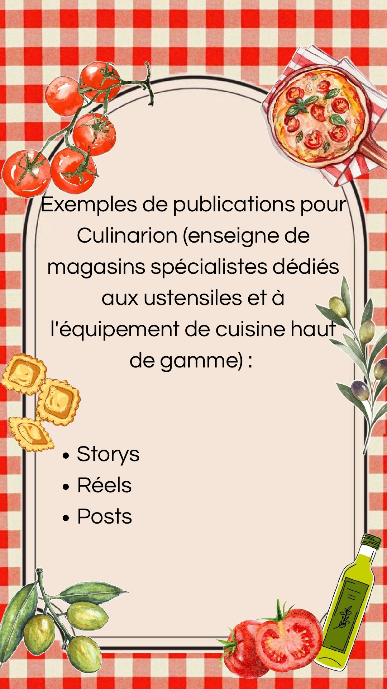

Contenus pour Culinarion
Quiz, sondages, reel et lancement de newsletter pour une enseigne d'ustensiles de cuisine haut de gamme, avec une touche bien réunionnaise.

Contexte
Culinarion est une enseigne de magasins spécialisés dans les ustensiles et l'équipement de cuisine haut de gamme. Pour la boutique de La Réunion, j'ai imaginé des contenus qui parlent aux cuisiniers du quotidien comme aux passionnés, avec un ancrage local assumé : carry, rougail et recettes péi.
Objectifs
- Valoriser les produits de la gamme sans tomber dans le catalogue
- Créer de l'engagement grâce à des stories interactives (quiz, sondages)
- Ancrer la marque dans la culture culinaire réunionnaise
- Lancer une newsletter et faire grandir sa base d'abonnés
Ma stratégie
Trois axes : interagir (quiz et sondages en stories), montrer les produits en situation (reels et posts), et fidéliser (newsletter). Un fil rouge relie les contenus : la cuisine locale. Les visuels s'adaptent à chaque format tout en gardant des couleurs chaudes — rouge, crème, bois — qui évoquent la convivialité.
- Canva
- Instagram Stories
- Reels
- Posts
- Newsletter
Contenus créés
1. Stories interactives : quiz & sondages
Des questions simples et ludiques (« Quel type de cuisinier·ère êtes-vous ? », « Vous cuisinez quoi ? ») invitent à répondre en un tap. Un sondage « Lequel voudriez-vous voir en action ? » met deux produits en duel : la réponse de la communauté détermine la recette présentée le lendemain.


2. Produits & ancrage local
Les produits sont présentés comme des solutions : trois indispensables pour réussir ses plats, un reel « 3 ustensiles que j'utilise tous les jours » plus personnel, et un post qui lie le rougail — plat emblématique de l'île — au bon ustensile, avec un appel à venir en magasin à Saint-Denis.


3. Lancement de la newsletter
Une séquence en quatre temps : un teaser mystérieux le lundi, l'annonce officielle, le détail de ce que les abonnés vont recevoir (nouveautés, astuces, actualités du magasin, bons plans), puis l'appel à l'inscription.


Résultats & enseignements
- Les contenus interactifs relancent la conversation et préparent le contenu du lendemain
- Parler le langage local (carry, rougail, recette péi) rapproche une enseigne de sa clientèle
- Une séquence de lancement en plusieurs étapes crée l'attente avant l'appel à l'action
- Montrer un produit en situation est plus convaincant que le présenter seul